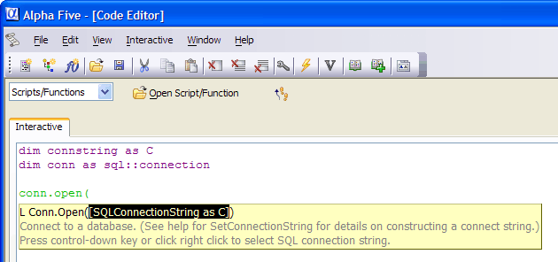

Creating an Object
The first object you will need when using AlphaDAO is the connection object. The connection object allows you to connect to your back-end database. The first connection object method that you will need to use is its .Open() method. To connect to a back-end database, you must provide a connection string. The connection string tells AlphaDAO how to find and open your database. For example, the following code creates a connection object and then connects to the Microsoft Access alphasports.mdb database.
Type this in the Interactive window:
|
dim conn as SQL::Connection conn.open( |

Right click to open the Create SQL Connection String dialog.
Leave the Connection Type list set to "Access".
Click
 in the File Name control to navigate
to and select the AlphaSports.MDB file in the
c:\program files\a5v8\mdbfiles\ directory.
in the File Name control to navigate
to and select the AlphaSports.MDB file in the
c:\program files\a5v8\mdbfiles\ directory.Click Test Connection. This should display a dialog box that tells you the connection succeeded.
Click OK to return to the Interactive window. The code should look like this.
|
dim conn as SQL::Connection conn.open("{A5API=Access,FileName='C:\Program Files\a5v8\MDBFiles\Alphasports.mdb',UserName='Admin'}") |
It is very important that you close your connections at your end of your scripts. If your script repeatedly opens connections and does not close them, you will run out of resources. To close an open connection, you use the connection object's .Close() method.
Let's close the open connection now. Type this in the Interactive window:
|
conn.close() |
Limitations
Desktop applications only.
See Also
Working with SQL Databases, SQL::Connection Object